Module 8—Acid-Base Equilibrium
 Read
Read
Equilibrium Constant for Bases, Kb
The analysis of the equilibrium of bases has many similarities to the analyses you have completed so far in this lesson. Read from “Calculating Kb from Amount Concentrations” on page 745 in the textbook to the start of “Calculating [OH–(aq)] from Kb” on page 746.
 Self-Check
Self-Check
SC 5. Complete “Practice” questions 10–13 on page 746 in the textbook.
Self-Check Answers
Contact your teacher if your answers vary significantly from the answers provided here.
SC 5.
Practice 10.
Empirical Property |
Expected Result with a Strong Base |
Expected Result with a |
conductivity |
strong electrolyte |
weak electrolyte |
pH |
high |
lower, but above 7 |
rate of reaction |
higher |
lower |
Practice 11.
- CN–(aq) + H2O(l)
 HCN(aq) + OH–(aq)
HCN(aq) + OH–(aq)
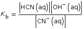
- SO42–(aq) + H2O(l) HSO4– (aq) + OH–(aq)
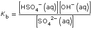
Practice 12.
| Amount Concentration | [C2H5COO–(aq)] |
[C2H5COOH(aq)] |
[OH–(aq)] |
Initial |
0.157 |
0 |
0 |
Change |
–1.1 × 10–5 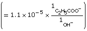 |
+1.1 × 10–5 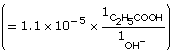 |
+1.1 × 10–5 |
Equilibrium |
0.157 |
1.1 × 10–5 |
1.1 × 10–5 |
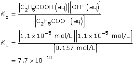
Practice 13.
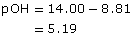

Amount Concentration |
[C6H5NH2(aq)] |
[C6H5NH3(aq)] |
[OH–(aq)] |
Initial |
0.10 |
0 |
0 |
Change |
–6.5 × 10–6 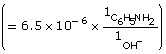 |
+6.5 × 10–6 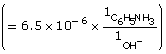 |
+6.5 × 10–6 |
Equilibrium |
0.10 |
6.5 × 10–6 |
6.5 × 10–6 |
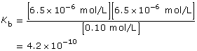
Read
A relationship exists between the three equilibrium constants you used in this module. Read pages 746–750 in the textbook, and work through the “Sample problems” and “Communication examples” in this section to learn more about the relationship between Ka, Kb, and Kw.
Self-Check
SC 6. Complete “Section 16.3” questions 1 and 2 on page 750 in the textbook.
Self-Check Answers
Contact your teacher if your answers vary significantly from the answers provided here.
SC 6.
Section 16.3 1.
Cod(aq) + H2O(l)  Cod+(aq) + OH–(aq)
Cod+(aq) + OH–(aq)
Approximation
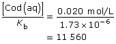
This is significantly higher than 1000; so the assumption holds, and the change in concentration in codeine is insignificant.
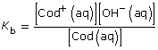
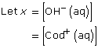
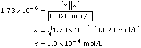
[OH–(aq)] = 1.9 × 10–4 mol/L
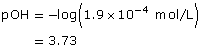
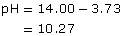
Section 16.3 2.
CN–(aq) + H2O(l)  HCN(aq) + OH–(aq)
HCN(aq) + OH–(aq)
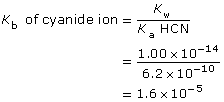
Approximation
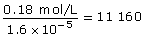
This is greater than 1000, so the change in concentration of CN– is not significant.
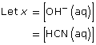
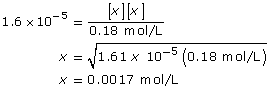
[OH–(aq)] = 0.0017 mol/L
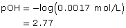
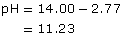